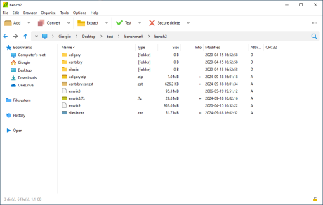

RAR format
(Roshal archive, from
the name of the author) is a
popular
archive type introduced by WinRAR for
Windows platform. Rar management routines were ported to Linux only for
extraction (unrar) by the same Author of WinRAR Eugene
Roshal. for
Windows platform. Rar management routines were ported to Linux only for
extraction (unrar) by the same Author of WinRAR Eugene
Roshal.
Due the huge popularity of the format many free alternatives to
WinRar were made available to work with rar files for decompression,
while writing function for compression to RAR format is not allowed to
third party applications by the original license of the file format.
PeaZip is able to open and extract RAR archives out-of-the-box, and if
WinRar is installed on the same machine PeaZip auto-configure itself to
be able to create (and modify) RAR files, providing read & write
support for RAR format from a single GUI.

Both legacy .rar files (up
to RARv2.9 / RAR4 format standards) and new RAR5
files are fully supported for extraction (unrar) by PeaZip free
archiver, effectively working with all
standard rar files specifications.

RAR format is well known
for the
high compression ratio of archives,
strong
encryption and advanced data recovery capabilities (recovery records).
PeaZip, freeware open source software, can open rar files and
supports by default RAR format browsing,
testing and extraction (decompress) on Linux and Windows,
through the open
source unrar implementation rewritten as Free Software by Igor Pavlov
in 7-Zip and
ported to Linux by p7zip project.
Open RAR files
PeaZip free rar
software allows to open
rar files free of charge, and to browse and search
content inside the archive. To view the rar file's content:
- open rar file from
system's explorer double
clicking the rar archive, if file
extension is associated with PeaZip as opener (default)
- if rar file
extension is not associated with
PeaZip as default opener, right-click on the archive and use system
context menu "Open as archive" entry,
that
will attempt to read any user provided file type regardless file
associations
Extract RAR files
To extract RAR files, one or multiple archive at time, through PeaZip
free rar extractor
you
can:
- Use context menu
entry "Extract here" or
"Extract
here (to new folder)" to extract rar file to current location
- Use context menu
entry "Extract..." to be asked
for
output path to extract the rar file to, and other extraction options
- Open rar archive in
PeaZip
and use
"Extract" button (you can chose output path, enter password and other
options before confirming with "Ok") to extract selected object, or
Ctrl+E for quick extraction simply specifying output path.
- Open
the rar archive in
PeaZip
and drag desired objects from the application to the system (the
opposite can be used to add objects to the archive)
- Open
the rar the archive in
PeaZip
and
doubleclick on an archived file to preview it
To enter password
in PeaZip free rar software utility, to decrypt encrypted rar files,
click in the locker icon in
the status bar
(in the file/archive browser) or the locker icon below output address
field in extraction or archiving interfaces, or click Tools > Enter
password / keyfile in main menu, or press F9.

On password prompt for rar files, "Keyfile" field (which is always
optional) should be left blank, WinRar encryption does not support
PeaZip's two
factor authentication - which increases security requiring the
recipient of the encrypted file to have access to the key file othar
than knowing the password for the archive.
Read more about how to find, select and extract single
file form RAR archives.
Convert RAR files, i.e. rar to zip...
Convert files function
extracts and then re-pack input archive files into any write-supported
format (7z, arc, pea, rar, tar, zip...). This tool can i.e. convert rar
to zip or 7z, as well as the inverse i.e. convert zip to rar.
7z, tar,
zip archives can be converted to rar format if WinRar is installed on
the same system, which allows PeaZip to fully support rar compression,
otherwise PeaZip will support rar format rar-only, limited to rar
opener (reader,
viewer) and extractor
operations.

Split
(spanned) RAR files, archives
splitted in multiple volumes, are usually
named with extension .R00, .R01, .R02... or .001, or .001.RAR. It is
usually needed to save all the files of the set in the same folder, and
to double click on the first volume (the one with the lowest number in
the suffix), in order to open or extract the entire archive - the
procedute will take care of merging data spanned in different volumes
when needed.
Synopsis: How to use PeaZip
free RAR software, opener and extractor utility. WinRar archives
extraction: how to open, extract RAR files free. Work with Open Source
Windows, Linux unrar application.
Decrypt password protected (encrypted) RAR archives. Convert rar file
to other formats, i.e. convert rar to zip, or rar to 7z. How to manage
spanned rar archives.
Topics: free rar files extractor utility, how to open rar files,
extract rar files, convert rar files to other archive formats
PeaZip > FAQ > Free RAR files opener and extractor utility.
 WORK WITH
SUPPORTED
FILE TYPES WORK WITH
SUPPORTED
FILE TYPES
Create, open, extract 7Z files
Open and extract ACE files
Create, open, extract ARC files
Create, open, extract Brotli files
Compress, decompress Bzip2 files
Open and extract CAB files
Compress, decompress GZip files
Open and extract DMG, ISO, UDF disk images
Create, open, extract PAQ, LPAQ, ZPAQ files
PEA: Pack Encrypt Authenticate
Open
and extract RAR files
Create, open, extract
TAR, TGZ, TBZ files
Create, open, extract WIM disk images
Create, open, extract ZIP files
Create, open, extract ZIPX files
Create, open, extract
Zstandard files
|
|